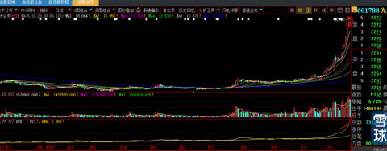
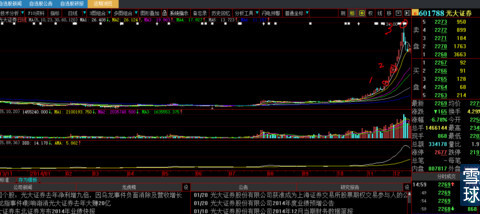

为什么？我也不知道，不是卖关子，是真的不知道。我只知道，我的经验就是这样。世界上有很多东西，能够感知无法用语言表达。
你们自求多福吧！
下图是第一次稍息

下图是第二次稍息

下图就是头部踩踏事件的产生。多少人还希望上2次的情况再次发生，它用图形回答人们的疑问：木有了！
俗话说：一而再、再而衰、三而竭。

看得懂的，点一下就懂，看不懂的打死他也不懂。
上面举例就是影射浙江龙盛。
 |
没有这样2天停顿，就不可能有那样的高度炒的是心 2015-01-20 18:01:32 |
Copyright © 1996-2014 SINA Corporation All Rights Reserved.